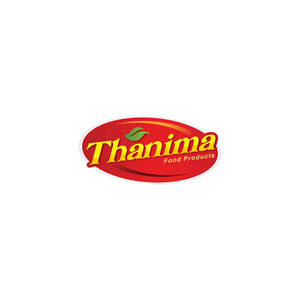

Trade Mark Journal No.2025/020 16 May 2025
UK00004197449 1 May 2025 (29,30)

- Class 29
- Dairy products; Seafood products; Processed seafood products; Dairy products and dairy substitutes; Food products made from fish; Fish (Food products made from -); Frozen meat products; Prepared vegetable products; Fish products being frozen; Desserts made from milk products; Frozen fruits; Frozen vegetables; Frozen chips; Fruit snacks; Frozen seafood; Frozen meat; Meat, frozen; Frozen fish; Frozen spinach; Potato snacks; Coconut-based snacks; Frozen chicken; Candied fruit snacks; Frozen cooked fish; Fruit-based snack food; Snack food (Fruit-based -); Potato snack foods; Soy-based snack foods; Vegetable-based snack foods; Fruit based snack foods; Canned pulses; Dried pulses; Processed fruits, fungi, vegetables, nuts and pulses; Soya bean oil for food; Coconut milk powder; Coconut milk; Coconut powder; Desiccated coconut; Cooked chicken; Cooked meat; Cooked meat dishes; Vegetables, cooked; Cooked fish; Cooked beans.
- Class 30
- Snack food products consisting of cereal products; Starch products for food; Mixes for making bakery products; Preparations for making bakery products; Snack food products made from rice; Chips [cereal products]; Chocolate fillings for bakery products; Snack food products made from maize flour; Snack products made of cereals; Snack food products made from rice flour; Maize based snack products; Extruded food products made of wheat; Snack food products made from rusk flour; Rice; Flour of rice; Rice flour; Cooked rice; Fried rice; Brown rice; Steamed rice; Rice cakes; Wholemeal rice; Rice biscuits; Rice snacks; Rice crisps; Puffed rice; Rice chips; Flour for making dumplings of glutinous rice; Onigiri [rice balls]; Rice sticks; Prepared rice; Rice mixed with vegetables and beef [bibimbap]; Kheer mix (rice pudding); Instant rice; Cooked rice mixed with vegetables and beef (bibimbap); Rice cake snacks; Maize flour; Barley flour for food; Corn flour [for food]; Breakfast cereals made of rice; Tapioca flour for food; Corn flour; Shrimp noodles; Bread with soy bean; Wheat flour [for food]; Freeze-dried dishes with main ingredient being rice; Freeze-dried dishes with the main ingredient being rice; Frozen cakes; Frozen pastry stuffed with vegetables; Frozen prepared rice; Frozen pastry stuffed with meat and vegetables; Wheat-based snack foods; Semolina.
Jijo Jacob